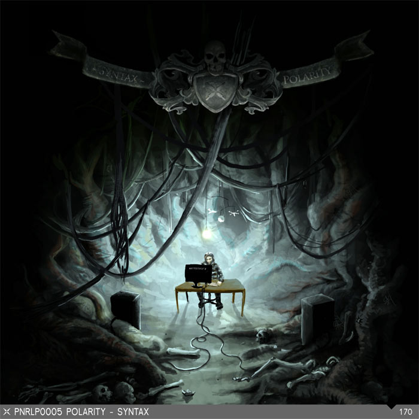

Electronic music producer, dj, performer, community creator and open source dude. Read his story.
Born in Eisleben on May 1 1979, Polarity a.k.a Robert Agthe grew up in a musical family. His father was a professional drummer, so Polarity got in touch with the kicks and snares at an early age. When he was seven, his parents enrolled him at the local brass band where he learned drumming and marching. However, he did not like this of genre and stopped making music untill he obtained his first computer in 1993. Polartiy quickly learned to use trackers and samplers and saw his future in producing electronic music. Without much knowledge and hardware, he tried to realise his compositions. Every year, new technology brought new possibilities and he tried to use them for his productions
Since 1999, Polarity used the Internet on a daily basis, so the question of contacing likeminded people arose. Without further ado, he decided to found a website to provide a forum for producers. The project producer-network.de was born.The site should give hobby producers the possibility to exchange experiences and to present their tracks.
In 2000, one of Polarity's internet buddies called his attention to the singer Terra from Vienna. Via ICQ, an online chat, they exchanged the first ideas and Terra introduced Polarity to her then team colleague Shroombab. Shroombab liked his music and they started to work together in 2001. Uniting their musical roots, they produced very danceable tracks. Their work quickly beared fruits, leading to a release on Micky Finn's lable Urban Takeover. Furthermore, they released tunes on labels like Protogen, Thermal Recordings and Trickdisc. In 2002, they also foundend their own label High Tension on which they have released one record up to now. Polarity
At the same time, Polarity got mail from the producer team Phace from the Saarland in Germany. He was thrilled and invited them immediately to Aglasterhausen where they produced several tracks together, presenting a different side of Drum and Bass.
In 2003, Polarity programed the website junglistic-sistaz.com. With Junglistic Sistaz, Shroombab wants to encourage and promote young, talented women DJs and producers.?
In 2004, Polarity and Shroombab separated to realise their individual musical ideas. Shroombab decided to continue to manage High Tension, present her sound on it and to pursue her DJ career respectively. Polarity carried on to concentrate on his production skills.?
At the end of 2004, Polarity teamed up with Jericho, a producer from Nuremberg he met via his website Producer Network. Jericho's liking for dubby sounds and Polarity's preferrence for midrange basslines harmonised well, and so they produced five 1998-Virus-Recordings-style tunes between 2004 and 2005. At the same time, Polarity produced the first German Drum and Bass & Hip Hop album „Vogel oder Fighter“, together with MC Mankind from Ulm. The album met with very positive responses, mainly from the Hip Hop fraction. A worthy sequel is already in planning. The idea for the album came from the surprisingly successful single „Mein Weg“ Polarity and Mankind had recorded in 2004. It's production took one year and features German artists like the Giana Brothers, Nphect & Display, the NMEclick and Broken Harmony. For the first time, Polarity produced two Nuskool Breaks tracks for the album . Polarity
In the beginning of 2005, Polarity and a group of highly motivated editors founded the German online magazine DnBSzene.de. Here, one can read interviews, reports, watch videos and get information on party dates. The site is characterised by its unconventional layout.
Everyone can participate, and so the users can decide about design and content of the website. The forum offers freedom for all kinds of thoughts and is not strictly moderated. DnBSzene wants to provide free and neutral information and to offer quick access.
In 2006 polarity moved to Berlin and started a label called PNR or Producer-Network Records. The imprint is focused on supporting talented artists who are registered Members of the Producert-Network. Featuring Music by Skyence, Erdbeerschnitzel and Cruel Culture and Cover and art design by Marie Schweiz and Yvonne Richter. 2008 was the year of "Syntax". Polarity´s debut album. Packed with deep drum and bass tunes and published on his own PNR imprint.
 cover by Marie Schweiz
"Polarity" – long but not completely gone – is back to present his version of Drum and Bass mixed with his adventures and visions on the new sampler "Syntax". "Syntax" is his way of communicating with the audience, to express himself, to say "I am back".
"Syntax" is a tragical approach to the Dancefloor, with yesterday's early dramatic art and tomorrow's technology. "Syntax" is a journey through open spaces, analog sound structures and nasty funkbeats.
The release is also pioneering a free high quality download for all fans of excellent music. Music is freedom on all counts. Music must be heard. Music is self-expression and shouldn't be degraded to a simple product.
Polarity's "Syntax" is simple, but with a message and desire for the future.
Besides, Polarity had numerous DJ gigs over the years and distributed his producions to miscellaneous clubs in Germany. However, his main focus is still on producing because he sees the biggest creative possibilities here.
Kings of The Jungle (Mannheim), Made in Germany (Mannheim), Basstard (Berlin), Vesss (Insel Poel), Juz, (Mannheim), Sounds Of Life (Frankfurt), Cube Club (Chemnitz), Music 4 A Hard Life (Frankfurt), Treibhaus (Regensburg), Raw Tempel (Berlin), Polarity (Saarbrücken), BumRush (Bad Kreuznach)
All releases are listed and tagged on Discocs. Go to the Discogs Polarity Profile. Whoever maintains my page there, thx for all the work and fast updates, much appreciated!